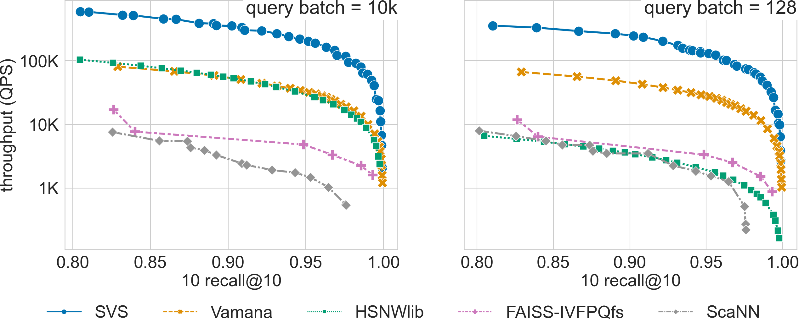
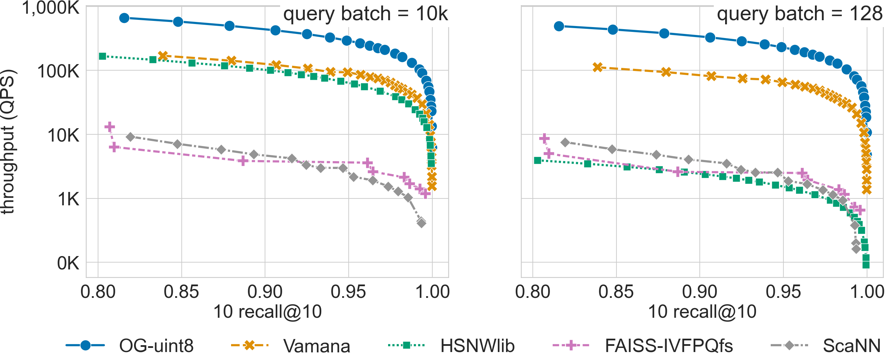
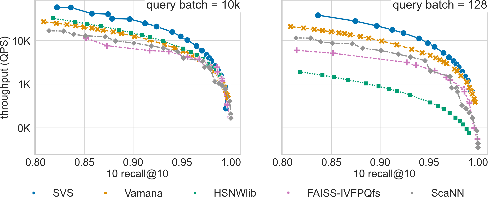

Large Scale Benchmarks
We present here the results of an exhaustive evaluation, comparing SVS to other implementations as well as evaluating the performance of different SVS flavors (with different data types, vector compression) for large scale datasets.
System Setup and Datasets
We run our experiments on a 3rd generation Intel® Xeon® Platinum 8380 CPU @2.30GHz with 40 cores (single socket), equipped with 1TB DDR4 memory per socket @3200MT/s speed, running Ubuntu 22.04. [1] [2]
We use numactl to ran all experiments in a single socket (see NUMA Systems for details).
We use the hugeadm Linux utility to preallocate a sufficient number of 1GB huge pages for each algorithm.
SVS explicitly uses huge pages to reduce the virtual memory overheads.
For a fair comparison, we run other methods with system flags enabled to automatically use huge pages for large allocations.
We consider datasets that are large scale because of their total footprint (see Datasets for details):
deep-96-1B (96 dimensions, 1 billion points)
sift-128-1B (128 dimensions, 1 billion points)
t2i-200-100M (200 dimensions, 100 million points)
Comparison to Other Implementations
Search with Reduced Memory Footprint
In large-scale scenarios, the memory requirement grows quickly, in particular for graph-based methods. This makes these methods expensive, as the system cost is dominated by the total DRAM price. We compare here the performance, for different memory footprint regimes, of SVS vs. four widely adopted approaches: Vamana [SDSK19], HSNWlib [MaYa18], FAISS-IVFPQfs [JoDJ19], and ScaNN [GSLG20]. [3] See Parameters Setting for details on the evaluated configurations and the version of the code used for each method.
{kind=link}
SVS exploits the power of graph-based similarity search and vector compression [ABHT23] to enable high-throughput and
high-accuracy with a small memory footprint. The figure shows the results for a standard billion scale dataset
(Deep-1B, 1 billion 96-dimensional vectors) for a search accuracy of 0.9
10-recall at 10. For graph-based methods, the memory footprint is a function of the graph_max_degree (R in the figure)
and the vector footprint.
With a memory footprint of only 245 GiB, SVS delivers 126k queries-per-second, that is 2.3x, 2.2x, 20.7x, and 43.6x more throughput with 3.0x, 3.3x, 1.7x, and 1.8x lower memory than the current leaders, Vamana, HSNWlib, FAISS-IVFPQfs, and ScaNN respectively. With the highest-throughput configuration, SVS achieves 336k queries-per-second outperforming the second-highest by 5.8x with a 1.4x lower memory footprint (596GiB).
Parameters Setting
We used the following versions of each method: SVS commit ad821d8, Vamana commit 647f68f, HNSWlib commmit 4b2cb72, ScaNN commit d170ac5, and FAISS-IVFPQfs commit 19f7696.
For SVS and Vamana, we build Vamana graphs with: graph_max_degree = 32, 64, 126 and alpha = 1.2. SVS
is used with LVQ-8 compressed vectors, with vectors padded to half cache lines (padding = 32,
see How to Choose Compression Parameters for details).
For HSNWlib, we build graphs with a window search size of 200 and graph_max_degree = 32, 64, 96 (this corresponds
to M=16, 32, 48 in HSNW notation). We had to reduce graph_max_degree from 128 to 96 to fit the working set size in
1TB memory.
For FAISS-IVFPQfs, we use nlist = 32768 and nbins \(=48\).
Re-ranking is enabled, and at runtime we sweep nprobe \(=[1,5,10,50,100,200]\) and k for re-ranking \(= [0,10,100,1000]\).
For ScaNN, we use the recommended parameters setting: n_leaves = \(\sqrt{n}\), avq_threshold = 0.2,
dims_per_block = 2 (where \(n\) is the number of vectors in the dataset), as that is the best among several
evaluated settings and vary the runtime parameters (leaves_to_search = [2-1000], reorder = [20-1000]).
For FAISS-IVFPQfs and ScaNN, which follow the same index design, the memory footprint is almost constant for different
considered parameter settings.
High-throughput Regime
In the high-throughput regime, all methods are set assuming high throughput is the main priority and memory availability is not a major issue. We compare SVS to four widely adopted approaches: Vamana [SDSK19], HSNWlib [MaYa18], FAISS-IVFPQfs [JoDJ19], and ScaNN [GSLG20]. [3] See Parameters Setting for details on the evaluated configurations and the version of the code used for each method.
Results summary:
SVS shows a large performance advantage across recall values for billion scale datasets with Euclidean distance (see results for deep-96-1B and sift-128-1B below).
For high-dimensional datasets that require inner product, SVS has a significant performance advantage across recall values for query batch size 128, and up to recall 0.95 for batch size 10k (see results for t2i-200-100M below).
For a search accuracy of 0.9 10-recall at 10, SVS achieves
6.5x and 5.4x higher throughput over the closest competitor for deep-96-1B with query batch sizes 10k and 128 respectively.
3.4x and 4.0x higher throughput over the closest competitor for sift-128-1B (uint8-valued vectors) with query batch sizes 10k and 128 respectively.
2.0x higher throughput over the closest competitor for t2i-200-100M.
Click on the triangles to see the throughput vs recall curves for each dataset.
Results for the deep-96-1B dataset
{kind=link}
Results for the sift-128-1B dataset
{kind=link}
Results for the t2i-200-100M dataset
{kind=link}
Parameters Setting
We used the following versions of each method: Vamana commit 647f68f, HNSWlib commmit 4b2cb72, ScaNN commit d170ac5, and FAISS-IVFPQfs commit 19f7696.
For SVS and Vamana, we use the following parameter setting to build Vamana graphs for all the datasets:
graph_max_degree= 128 (we usegraph_max_degree= 126 for deep-96-1B),alpha= 1.2 andalpha= 0.95 for Euclidean distance and inner product respectively.
For SVS, we include various LVQ settings (LVQ-8, LVQ-4x4, LVQ-4x8, and LVQ8x8) as well as float16 and float32 encodings.
LVQ-compressed vectors are padded to half cache lines (padding = 32).
For HSNWlib, we build all graphs with a window search size of 200 and graph_max_degree = 128 (this corresponds
to M=64 in HSNW notation), except deep-96-1B for which we must reduce graph_max_degree to 96 to fit the
working set size in 1TB memory.
For FAISS-IVFPQfs, we pre-build indices with nlist = 32768 and nbins \(=d/2\) (where \(d\) is the dataset dimensionality)
for the 1 billion scale datasets deep-96-1B and sift-128-1B. For t2i-200-100M, indices are built on the fly
with combinations of nlist \(=[512, 1024, 4096, 8192]\) and nbins \(=[d/4, d/2, d]\).
Re-ranking is enabled, and at runtime we sweep nprobe \(=[1,5,10,50,100,20]\) and k for re-ranking \(= [0,10,100,1000]\).
For ScaNN, we use the recommended parameters setting: n_leaves = \(\sqrt{n}\), avq_threshold = 0.2,
dims_per_block = 2 (where \(n\) is the number of vectors in the dataset) for the billion scale datasets
(deep-96-1B and sift-128-1B), as that is the best among several evaluated settings. For t2i-200-100M we evaluate
different parameter settings (see Table below). For all dataests we vary the runtime parameters
(leaves_to_search = [2-1000], reorder = [20-1000]).
ScaNN parameter setting |
||
t2i-200-100M |
||
n_leaves |
avq_threshold |
dims_per_block |
2000 |
0.2 |
1 |
5000 |
0.15 |
3 |
10000 |
0.2 |
2 |
20000 |
0.2 |
2 |
In all cases where several parameter settings are evaluated, the results show the corresponding Pareto lines.
Footnotes